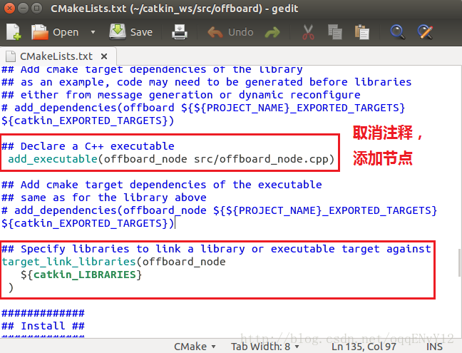

ROS（机器人操作系统，Robot Operating System），是专为机器人软件开发所设计出来的一套电脑操作系统架构。它是一个开源的元级操作系统（后操作系统），提供类似于操作系统的服务，包括硬件抽象描述、底层驱动程序管理、共用功能的执行、程序间消息传递、程序发行包管理，它也提供一些工具和库用于获取、建立、编写和执行多机融合的程序。
ROS的运行架构是一种使用ROS通信模块实现模块间P2P的松耦合的网络连接的处理架构，它执行若干种类型的通讯，包括：
基于服务的同步RPC（远程过程调用）通讯；
基于Topic的异步数据流通讯，还有参数服务器上的数据存储。
ROS可与PX4一起用于飞行器的外部控制, 它使用MAVROS节点与在硬件上运行的PX4或使用Gazebo Simulator进行通信。MAVROS节点的安装请参考Ubuntu16.04安装MAVROS ，下面以编写基于MAVROS的外部控制节点为例，介绍ROS包和节点的构建过程。
ROS包构建方法 catkin和rosbuild是构建ROS包的两种方法。目前多用catkin构建ros包。
catkin包可以构建为独立项目，与构建普通cmake项目的方式相同，但catkin还提供了工作空间的概念，您可以在其中同时构建多个相互依赖的包。
ROS包构成 ROS包是其代码组织的一种高级结构好哦，最简单的catkin包的构成如下：
1 2 3 my_package/ CMakeLists.txt package.xml
其中:
包必须包含一个符合catkin的package.xml文件。
包必须包含一个使用catkin的CMakeLists.txt。
如果它是catkin元数据包，它必须具有相关的样板CMakeLists.txt文件。
包都必须有自己的文件夹。
catkin工作空间的构成 使用catkin软件包的推荐方法是使用catkin工作区，但您也可以独立构建catkin软件包。 一个简单的工作空间可能如下所示：
1 2 3 4 5 6 7 8 9 10 workspace_folder/ -- WORKSPACE src/ -- SOURCE SPACE CMakeLists.txt -- 'Toplevel' CMake file, provided by catkin package_1/ CMakeLists.txt -- CMakeLists.txt file for package_1 package.xml -- Package manifest for package_1 ... package_n/ CMakeLists.txt -- CMakeLists.txt file for package_n package.xml -- Package manifest for package_n
创建catkin包 通常使用catkin_create_pkg命令创建新的catkin包，具体步骤如下：
1 2 3 4 5 6 7 8 $ mkdir -p ~/catkin_ws/src $ cd ~/catkin_ws/src # 创建名为offboard的ros包，它依赖roscpp、mavros和geometry_msgs $ catkin_create_pkg offboard roscpp mavros geometry_msgs $ cd offboard/src/ # 创建offboard_node.cpp，将官方PX4外部控制例程代码写入该文件 # 该文件也是offboard包的第一个node $ touch offboard_node.cpp
offboard_node.cpp文件的具体内容如下：
1 2 3 4 5 6 7 8 9 10 11 12 13 14 15 16 17 18 19 20 21 22 23 24 25 26 27 28 29 30 31 32 33 34 35 36 37 38 39 40 41 42 43 44 45 46 47 48 49 50 51 52 53 54 55 56 57 58 59 60 61 62 63 64 65 66 67 68 69 70 71 72 73 74 75 76 77 78 79 80 81 82 83 84 85 86 87 /** * @file offb_node.cpp * @brief Offboard control example node, written with MAVROS version 0.19.x, PX4 Pro Flight * Stack and tested in Gazebo SITL */ #include <ros/ros.h> #include <geometry_msgs/PoseStamped.h> #include <mavros_msgs/CommandBool.h> #include <mavros_msgs/SetMode.h> #include <mavros_msgs/State.h> mavros_msgs::State current_state; void state_cb(const mavros_msgs::State::ConstPtr& msg){ current_state = *msg; } int main(int argc, char **argv) { ros::init(argc, argv, "offb_node"); ros::NodeHandle nh; ros::Subscriber state_sub = nh.subscribe<mavros_msgs::State> ("mavros/state", 10, state_cb); ros::Publisher local_pos_pub = nh.advertise<geometry_msgs::PoseStamped> ("mavros/setpoint_position/local", 10); ros::ServiceClient arming_client = nh.serviceClient<mavros_msgs::CommandBool> ("mavros/cmd/arming"); ros::ServiceClient set_mode_client = nh.serviceClient<mavros_msgs::SetMode> ("mavros/set_mode"); //the setpoint publishing rate MUST be faster than 2Hz ros::Rate rate(20.0); // wait for FCU connection while(ros::ok() && !current_state.connected){ ros::spinOnce(); rate.sleep(); } geometry_msgs::PoseStamped pose; pose.pose.position.x = 0; pose.pose.position.y = 0; pose.pose.position.z = 2; //send a few setpoints before starting for(int i = 100; ros::ok() && i > 0; --i){ local_pos_pub.publish(pose); ros::spinOnce(); rate.sleep(); } mavros_msgs::SetMode offb_set_mode; offb_set_mode.request.custom_mode = "OFFBOARD"; mavros_msgs::CommandBool arm_cmd; arm_cmd.request.value = true; ros::Time last_request = ros::Time::now(); while(ros::ok()){ if( current_state.mode != "OFFBOARD" && (ros::Time::now() - last_request > ros::Duration(5.0))){ if( set_mode_client.call(offb_set_mode) && offb_set_mode.response.mode_sent){ ROS_INFO("Offboard enabled"); } last_request = ros::Time::now(); } else { if( !current_state.armed && (ros::Time::now() - last_request > ros::Duration(5.0))){ if( arming_client.call(arm_cmd) && arm_cmd.response.success){ ROS_INFO("Vehicle armed"); } last_request = ros::Time::now(); } } local_pos_pub.publish(pose); ros::spinOnce(); rate.sleep(); } return 0; }
之后需要修改~/catkin_ws/src/offboard目录下的CMakeLists.txt文件。取消掉一些注释，生成相应节点（否则会出现找不到节点的错误）。

构建catkin包 在catkin工作空间（catkin_ws）中，使用catkin_make工具从源文件构建和安装一个包：
1 2 3 4 5 6 7 $ cd ~/catkin_ws $ catkin_make $ catkin_make install # 配置catkin工作空间，使ros能找到刚生成的offboard包 $ source devel/setup.bash # 查看ros包路径环境变量是否配置好 $ echo $ROS_PACKAGE_PATH
参考链接
Ubuntu16.04安装MAVROS ,by jackhuang.Creating a ROS Package , by ros homepage.Building a ROS Package , by ros homepage.Understanding ROS Nodes , by ros homepage.catkin 与 rosbuild解析及两者区别和联系 ,by Xuefeng_BUPT.Pixhawk原生固件PX4之SITL软件在环仿真 ,by FantasyJXF.Pixhawk原生固件PX4之offboard ,by FantasyJXF.MAVROS Offboard control example , by dronecode.